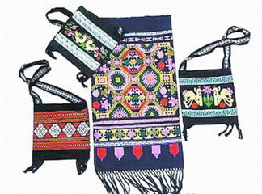
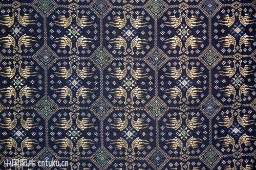

壮族织锦技艺是中国的传统手工技艺之一。壮锦技艺形成于唐宋时代，明清时期进一步发展，在明代列为贡品，清末民初，壮锦开始衰落。历经千余年发展的壮锦 有自成体系的三大种类、二十多个品种和五十多种图案，以结实耐用、技艺精巧、图案别致、花纹精美著称。
2006年5月20日，壮族织锦技艺经国务院批准列入第一批国家级非物质文化遗产名录。
壮锦图案精巧，色彩绚丽，既是精美的工艺品，又具有很高的实用价值。壮锦以其花纹图案别致，色泽鲜丽，坚固耐用，有浓厚的民族特色而驰名中外。壮族民间织锦品种有被面、床毯、背带、挂包、台布、围裙、头巾、衣服边角饰等。

织造技术
壮族人民在长期的劳动中琢磨出了一整套壮锦织造技术。他们使用的是装有支撑系统、传动装置、分综装置和提花装置的手工织机，以棉纱为经，以各种彩色丝绒为纬，采用通经断纬的方法巧妙交织而成的。 使用的传统小木机，又称壮族竹笼机，机上设有"花笼"用以提织花纹图案，用花笼起花为壮锦织机的最大特点。
壮锦色彩
"红配绿，看不俗"，这体现了壮族织锦艺人对壮锦配色的一些要求:既要艳丽夺目，还要经久耐看。壮族多喜重彩，以红、黄、蓝、绿为基本色，其余是补色，对比鲜明强烈，以红为背景，充满热烈、活跃、欢腾的气氛;用绿作烘托，有开朗的情调;如以黄绿配置，则艳丽动人。一幅壮锦，常常用几种颜色甚至是十几种颜色搭配组成，由于配置得当，显得斑斓绚丽，丰富统一。对比和谐，古艳深厚，华而不俗。
壮锦图案
壮锦图案构成的式样大致有三种:一是平纹上织二方连续和四方连续的几何纹，组成连绵的几何图案，显得朴素而明快;二是以各种几何纹为底，上饰动植物图案，形成多层次的复合图形，图案清晰而有浮雕感;三是用多种几何纹大小结合，方圆穿插，编织成繁密而富于韵律感的复合几何图案，有严谨和谐之美;